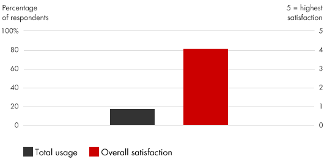
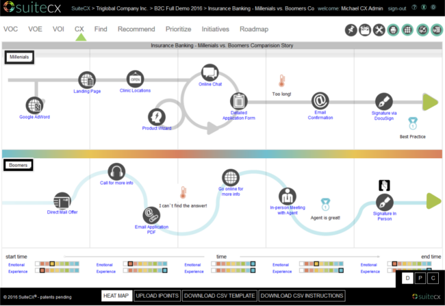

📘معرفی ابزار
نقشه سفر مشتری یک نمایش بصری از تجربیات کاربر در مورد محصول یا خدمت شما است. تحلیل سفر مشتری به یک شرکت کمک میکند تا محصولات یا خدمات خود را از دید مشتریان خود ببیند. سفر مشتری مجموع تجربیاتی است که او هنگام تعامل با یک شرکت یا برند داشته است. این سفر را میتوان ترسیم کرد و سپس مورد تجزیه و تحلیل قرار داد. بینش حاصل از آن به شرکتها کمک میکند تا محصولات و خدماتی طراحی کنند که مشتریان را به اهداف خود به بصورت کارآمدتری نزدیک کند.
نقشه سفر مشتری از طریق کانالهای مختلف (نظیر جستجوی آنلاین، مکالمه با یک نماینده در مرکز تماس، بازدید از یک فروشگاه، خرید آنلاین) شامل دادههایی با ارزش است که میتواند در کنار هم چالش برانگیز باشد که درک آنها بسیار مهم است. تحقیقات پیشرفته به شرکتها کمک میکند تا تجربه واقعی مشتریان خود را در انواع زمینههای مختلف درک کنند و آن را به نتایج کسبوکار، از جمله احتمال تبدیل شدن مشتری به یک مبلغ شرکت و یا تغییر نرخ خرید محصول مرتبط کند.
امروزه، بینش حاصل از تجزیه و تحلیل سفر مشتری از پردازش مقادیر زیادی از دادههای مشتری و عملیات تاریخی (کلان داده ها) حاصل میشود، رویکردی که در شناسایی الگوهای پیچیده در سفرهای مشتریان کمک میکند. البته این تجزیهوتحلیل به گونهای طراحی شده است که بیشتر پیشگویانه باشد. هدف نهایی آن استفاده از دادههای بلادرنگ جهت انجام اقداماتی است که بلافاصله تجربه هر مشتری را بهبود بخشد. آنالیز مشابهی از تجربیات کارمندان نیز میتواند به بهبود سطح خدمات کمک کند.
🆕بهروزرسانی ۱۴۰۵
این بخش در نسخهٔ آنلاین ۱۴۰۵ افزوده شده است. متن اصلی کتاب (آبان ۱۳۹۹) در بخشهای بعد بدون تغییر آمده است.
آمار و شواهد تازه
- Forrester گزارش کرده در آمریکا ۲۵٪ از برندهای بررسیشده در CX Index افت معنادار داشتند و فقط ۷٪ بهبود یافتند. دلایل: تجربهٔ ضعیف کارکنان، کمشدن مشتریمداری و پیادهسازیهای ناامیدکنندهٔ فناوری. (منبع: Forrester)
چه چیزی تغییر کرده؟
نقشهٔ سفر مشتری امروز باید لحظههای تعامل با ابزارهای خودکار (چتبات، پاسخگوی صوتی) را هم نشان دهد و بپرسد: کجا مشتری باید بتواند سریع به انسان برسد؟ ورودیهای نقشه نیز از «کارگاه فرضی» به دادههای واقعی (لاگ تماس، رفتار وب، شکایات) نزدیکتر شدهاند.
نمونه ابزارها و نرمافزارهای امروزی
نامها صرفاً نمونهاند و توصیه یا تبلیغ تجاری نیستند؛ شرایط دسترسی و تحریمها را برای سازمان خود بررسی کنید.
منابع این بخش
🧩فرآیند اجرا
- از همه مراحل و جنبههای تعاملات با مشتریان استفاده کنید.
- دادههای مربوط به هر تعامل را با اطلاعاتی در مورد تاثیر بر رضایت مشتری، وفاداری و کسبوکار تلفیق کنید.
- معیارهای عملکردی را که قبلا توسط واحدهای تجاری جداگانه نگهداری شده بودند به هم متصل کنید تا نشان دهد چگونه مشتری یک سرویس را از ابتدا تا پایان تجربه میکند.
- تفسیر بهتر دادهها از تجربه مشتری را با اتصال قطعات به یکدیگر و درک مشتری از ارزش انجام دهید.
- در صورت وجود دادههای زاید در طول سفر مشتری، که زمان مشتریان و منابع شرکت را هدر میدهد (به خصوص در کانالهای توزیع) فرصتهایی برای کاهش هزینه خدمت به مشتریان و همچنین بهبود تجربه مشتری را ایجاد کنید.
💼موارد استفاده در کسبوکار
- درک اهداف مشتری و آنچه آنها را راضی و یا ناامید میکند
- شناسایی شکاف بین آنچه یک کسبوکار فکر میکند ارائه میدهد و آنچه که یک مشتری در واقع تجربه میکند
- بهبود روابط مشتری با شرکت
- به کار انداختن مدیران برای اداره کسبوکار خود حول موضوعات مرتبط با مشتری (مثلا تحقیق درباره فرآیند خرید) به جای درگیر شدن در مسائل داخلی سازمانی
- دستیابی به این بینش که چه دنبالهای از وقایع ، مشتری را به نتیجهای مثبت یا رضایت بخش میرساند
- کاهش شکایات مشتریان و نرخ گردش مالی
- تعریف شاخصهای عملکرد موفق
- افزایش کارآیی با اولویت انجام آنچه که مشتریان بیشترین ارزش را بدست میآورند و سپس با پیوند دادن هر مرحله از تجربه به منظور ایجاد احساس یکپارچه و راحت در طی سفر
- کاهش هزینهها با کاهش ضایعات، زمانهای چرخه۱ و زمان رسیدن به بازار۲
📈میزان محبوبیت در طی زمان

🧪نمونه ابزار / الگو

در اینجا یک نمونه پلت فرم جهت مدیریت تجربه مشتری نشان داده شده است که مجموعهای از ابزارها و الگوها برای کمک به برنامه ریزی سفر مشتری ارایه میکند. البته ابزارهای مرتبط با فرآیندکاوی نیز در ادامه این موضوع نقش بسیار موثری در تجزیه و تحلیل سفر مشتری، شناسایی شکاف ها، اندازه گیری و کمک به بهبود آنها دارد.
⬇️چکلیست قابلدانلود
چکلیست اجرایی این ابزار را دانلود و در سازمان خود تکمیل کنید. گامها از فرآیند اجرای همین صفحه برداشته شدهاند و ستونهای مسئول، موعد و وضعیت برای پیگیری تیمی خالی گذاشته شده است.
⬇ دانلود چکلیست (Word) · تحلیل نقشه سفر مشتری📚مراجع مطالعه بیشتر
- Bain & Company, Customer Journey Analysis: https://www.bain.com/insights/management-tools-Customer-Journey-Analysis
- Mopinion, Top 20 Customer Journey Mapping Tools: An Overview, https://mopinion.com/top-20-customer-journey-mapping-tools-an-overview/
- Bradley, Katrina, and Richard Hatherall. “Mastering the Episodes that Count with Customers.” Bain.com, June 30, 2015.
- du Toit, Gerard, Rob Markey, Jeff Melton, and Frédéric Debruyne. “Running the Business through Your Customer’s Eyes.” Bain.com, February 9, 2017.
- Lichaw, Donna. The User’s Journey: Storymapping Products That People Love. Rosenfelt Media, 2016.
- Patton, Jeff. User Story Mapping: Discover the Whole Story, Build the Right Product. O’Reilly Media, 2014.
- Richardson, Adam. “Using Customer Journey Maps to Improve Customer Experience.” Harvard Business Review, November 15, 2010.
- Webb, Nicolas J. What Customers Crave: How to Create Relevant and Memorable Experiences at Every Touchpoint. AMACOM, 2016.
معادلهای انگلیسی
- ۱cycle times
- ۲time to market